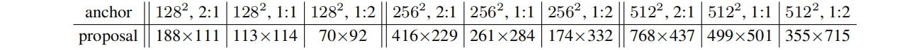
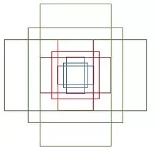
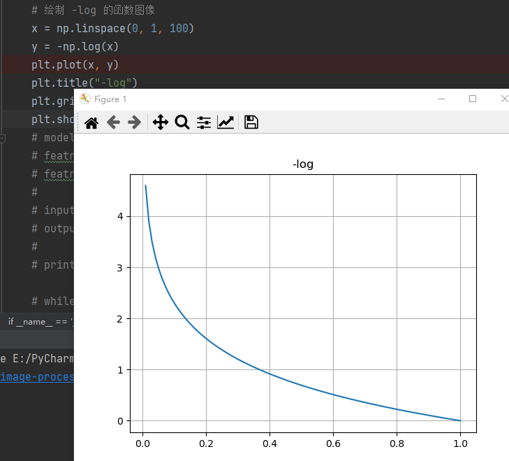
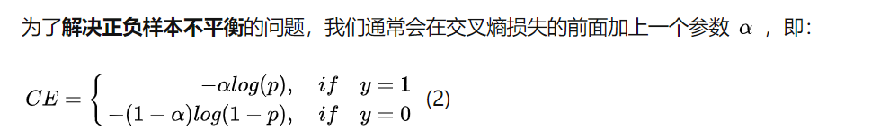
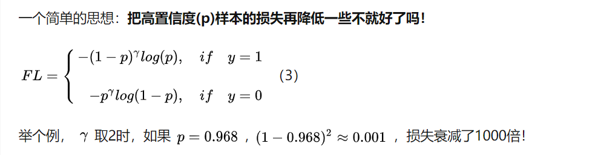
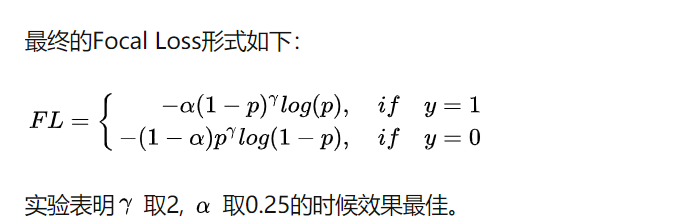
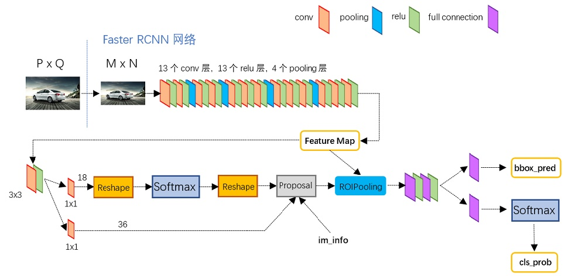

anchor
什么是 anchor？
anchor 是可能包含目标物体的矩形框。在目标检测任务中，通常会为每个像素点预设一个或多个大小和宽高比例不同的 anchor，以此使得图像上密集铺满了许多 anchor，从而覆盖到包含物体的所有位置区域。
早期的方法：金字塔多尺度 + 滑动窗口，逐尺度逐位置判断“这个尺度的这个位置处有没有认识的目标”，非常的耗时。
基于 anchor 的方法：预设一组不同尺度、不同位置的固定参考框，覆盖几乎所有位置和尺度，每个参考框检测与其交并比大于阈值的目标。anchor 将问题转换为“这个固定的参考框中有没有认识的目标，目标偏离参考框多远”。
RPN是一个conv3x3+两个并列的conv1x1，一边预测anchor中是否包含目标，一边预测目标框偏离固定anchor多远。
feature map上每个位置设置9个参考anchor，这些大约能覆盖边长70~768的目标。下图是Faster R-CNN论文中各个 anchor 形状训练后学习到的平均proposal大小。

特征提取部分：
import torch
import torchvision.models.vgg as vgg
import torch.nn as nn
if __name__ == '__main__':
model = vgg.vgg16(pretrained=False)
featrue = list(model.features)[:30]
featrue_extra = nn.Sequential(*featrue)
input = torch.randn((4, 3, 256, 256))
output = featrue_extra(input)
input.shape = torch.Size([4, 3, 256, 256])
output.shape = torch.Size([4, 512, 16, 16])
backbone 提取的特征图（Featuremap）相对于网络输入图像尺寸缩小了 16 倍。因此，featuremap 中的 1 个像素点就相当于输入图像的 16 个像素点。或者说，featuremap 中的 1x1 区域覆盖了输入图像的 16x16 区域。即 featuremap 中的每个像素点都对应的覆盖了输入图像的区域。
一个点对应 9 个 anchor。（3 种尺度、3 种宽高比的排列组合）

anchor 坐标有可能出现负数的情况。
计算 featuremap 左上角(0,0) 对应的 9 个 anchor 的中心点坐标和长宽之后，其余的点坐标/长宽可以通过平移的方式得到。
分类：
- 3x3 卷积，（融合周围 3x3 的区域，更鲁棒？）
- 1x1 卷积，（融合通道）
- ？
回归：
- 1x1 卷积将通道映射到 36=4x9。4 表示？
对分类和回归结进行后处理，生成 RoI（Region of Interest），也称为了 Proposal layer，对 RPN 输出的分类和回归结果进行后处理（如 非极大值抑制 等），得到网络任务包含物体的区域——RoI。
RoI Pooling 的作用是将不同尺寸的各个 RoI 都映射到相同大小。
RoI Pooling：如何划分 7x7 个 bin？当无法整除的情况，有人提出了 RoI Align 和 Precise RoI Pooling。
存在的缺点：每个 bin 中只有一点贡献了梯度，忽略了大部分点的信息。
将 RoI Pooling 后的结果 flatten 成为 vector，输入全连接层进行分类和回归，对应输出的神经元个数分别为物体类别数（n_classes）和每个类别对应的 bbox（n_classes x 4）。
RoIHead 的输出不是预测结果的最终形态，还需要进行一些后处理。
- 将网络输出缩放至原图尺寸（不是网络输入的尺寸）；
- 对回归的结果去归一化（乘 std, 加 mean），结合 RoIs 的位置和大小计算出 bbox 的位置（左上角坐标和右下角坐标），并且裁剪到原始尺寸范围内；
- 选择置信度大于阈值的矩形框，最后再使用非极大值抑制剔除重叠度高的 bbox 得到最终的结果。
还是搞不太懂，留一段时间吧。先看看 Focal Loss
— 分割线 —————————–
😡两个问题：
- （1）正负样本不平衡
- （2）难易样本不平衡
二分类问题的标准 Loss 是交叉熵：
$$L_{ce} = -ylog \check{y} - (1-y)log(1 - \check{y})$$
- 当 y = 1 时，$L = -log\check{y}$。（如果网络的输出预测值 $\check{y}$ 越接近于 1，则 loss 越小）
- 当 y = 0 时，$L = -log(1-\check{y})$（如果网络的预测值 $\check{y}$ 越接近于 0，则 loss 越小）
-log 的函数图像：

“硬截断”的 Loss：$L^* = \lambda(y, \check{y}) \cdot L_{ce}$，其中：
- (y == 1) 且 $\check{y} > 0.5$ 或 (y == 0) 且 $\check{y} < 0.5$ 时，$\lambda(y, \check{y}) = 0$
- 其他情况，为 1
正样本的预测值大于 0.5 的，或者负样本的预测值小于 0.5 的，就都不更新了，把注意力集中在预测不准的那些样本，当然这个阈值可以调整。
上面的 Loss 存在问题，即它只告诉模型正样本的预测值大于 0.5 就不更新了，却没有告诉它要“保持”大于 0.5。
进一步的优化是将“硬截断”的 Loss “光滑化”，可导。
GHM(gradient harmonizing mechanism) 是基于 Focal Loss 的改进。
公式(2)解决了正负样本的不平衡：

公式(3)解决了难易样本的不平衡：

结合 (2)(3) 得到 Focal Loss：

😍GHM：不应该过多关注易分样本，但是特别难分的样本（噪声、离群点）也不应该过多的关注。
梯度密度 $GD(g)$：单位梯度模长g部分的样本个数。
🤑关于目标检测任务中正负样本不平衡、难易样本不平衡问题的学习笔记
5分钟理解Focal Loss与GHM——解决样本不平衡利器
https://zhuanlan.zhihu.com/p/80594704
AAAI 2019：把Cross Entropy梯度分布拉‘平’，就能轻松超越Focal Loss
Focal Loss （RetinaNet）
one-stage 为什么会差于 tow-stage：
one-stage 网络最终学习的anchor有很多，但是只有少数anchor对最终网络的学习是有利的，而大部分anchor对最终网络的学习都是不利的，这部分的anchor很大程度上影响了整个网络的学习，拉低了整体的准确率；
two-stage 网络最终学习的anchor虽然不多，但是背景anchor也就是对网络学习不利的anchor也不会特别多，它虽然也能影响整体的准确率，但是肯定没有one-stage影响得那么严重，所以它的准确率比one-stage肯定要高。

- MxN 大小的图像经过 Conv layers 得到 (M/16)x(N/16) 的 Feature map
- 上面分支 1x1 卷积，得到的输出为 WxHx18（W=M/16，H=N/16）
FPN：Feature pyramid networks for object detection.
对于每张图像，detectors 评估 10^4 - 10^5 个候选位置，但只有少数位置包含对象。这种不平衡会造成两个问题：
- （1）训练是低效的，因为大多数位置都是简单的负样本，没有提供有用的学习信号。
- （2）简单的负样本可以压倒训练，并导致退化模型。
R-CNN -> Fast R-CNN -> Faster R-CNN
R-CNN: Regions with CNN features
😁RCNN 算法流程可以分为 4 个步骤：
- 候选区域的生成：Selective Search 算法
- 对每个候选区域，调整为相同的大小（warped region），使用深度网络提取特征
- 特征送入每一类的 SVM 分类器，判定类别
- 使用回归器精细修正候选框位置
R-CNN 框架（4 部分）
-
Region Proposal(Selective Search)
-
Feature extraction(CNN)
-
Classification(SVM)
-
Bounding-box regression(regression)
R-CNN 存在的问题：
- 测试速度慢：候选框之间存在大量重叠，提取特征冗余
- 训练速度慢：过程繁琐
- 训练所需空间大
Fast R-CNN
与 R-CNN 相比，训练时间快 9 倍，测试推理时间快 213 倍，准确率从 62% 提升至 66%。
😁Fast R-CNN 算法流程的 3 个步骤：
- 一张图像生成 1K~2K 个候选区域（Selective Search）
- 将图像输入网络得到相应的特征图，将 SS 算法生成的候选框投影到特征图上获得相应的特征矩阵（1k-2k 的候选框各自的 feature map）
- 将每个特征矩阵通过 ROI pooling 层缩放到 7x7 大小的特征图，接着将特征图展平通过一系列全连接层得到预测结果。
Fast-RCNN 将整张图像送入网络，紧接着从特征图像上提取相应的候选区域。这些候选区域的特征不需要再重复计算。
ROI Pooling 不限制输入图像的尺寸。
Multi-task loss
L = 分类损失 + 边界框回归损失
Fast CNN 框架（2 部分）
-
Region proposal(Selective Search)
-
Feature extraction/Classification/Bounding-box regression(CNN)
Faster RCNN：将 Region proposal 也融合进网络中，成为端到端的架构。
Faster R-CNN
推理速度 5fps（包括候选区域的生成）
😁Faster R-CNN 算法流程的 3 个步骤
- 将图像输入网络得到相应的特征图
- 使用 RPN 结构生成候选框，将 RPN 生成的候选框投影到特征图上获得相应的特征矩阵，
- 将每个特征矩阵通过 ROI pooling 层缩放到 7x7 大小的特征图，接着将特征图展平通过一系列全连接层得到预测结果。
RPN + Fast R-CNN
Region Proposal Network 替代 SS 算法。